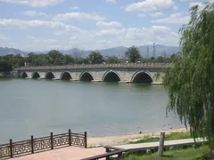
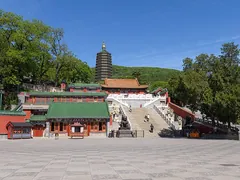
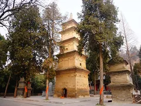
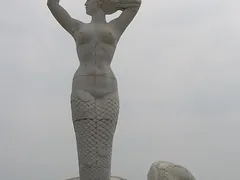
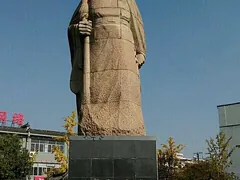

非遗图鉴 / 山海奇谭
01
非遗图鉴 · 民间文学
山海奇谭
民间文学 · 167 项、251 子项 · 第 3 / 3 页（Ⅰ-121 至 Ⅰ-167）
每一条只列名录上的事实：编号、名称、申报地区或单位、公布年份和批次。详情看中国非物质文化遗产网的官方页。在名录检索里查这一门类 →
- Ⅰ-121
阿细先基
- 云南省弥勒县2011 第三批 · 新增项目官方页 →
- Ⅰ-122
羌戈大战
- 四川省汶川县2011 第三批 · 新增项目官方页 →
- Ⅰ-123
恰克恰克
- 新疆维吾尔自治区伊宁市2011 第三批 · 新增项目官方页 →
- Ⅰ-124
酉阳古歌
- 重庆市酉阳土家族苗族自治县2011 第三批 · 新增项目官方页 →
- Ⅰ-125
- Ⅰ-126
卢沟桥传说
- 北京市丰台区2014 第四批 · 新增项目官方页 →

Marco Polo Bridge, 2014图：Alanba42 / CC BY-SA 4.0 / 维基共享资源。本站已缩放裁切，按 CC BY-SA 4.0 同样许可共享。 - Ⅰ-127
鬼谷子传说
- 河北省临漳县2014 第四批 · 新增项目官方页 →
- Ⅰ-128
东海孝妇传说
- 江苏省连云港市2014 第四批 · 新增项目官方页 →
- Ⅰ-129
刘阮传说
- 浙江省天台县2014 第四批 · 新增项目官方页 →
- Ⅰ-130
- Ⅰ-131
- Ⅰ-132
陈三五娘传说
- 福建省泉州市洛江区2014 第四批 · 新增项目官方页 →
- Ⅰ-133
胡峄阳传说
- 山东省青岛市城阳区2014 第四批 · 新增项目官方页 →
- Ⅰ-134
孟母教子传说
- 山东省邹城市2014 第四批 · 新增项目官方页 →
- Ⅰ-135
河图洛书传说
- 河南省洛阳市2014 第四批 · 新增项目官方页 →
- Ⅰ-136
杞人忧天传说
- 河南省杞县2014 第四批 · 新增项目官方页 →
- Ⅰ-137
三国传说
- 湖北省2014 第四批 · 新增项目官方页 →
- Ⅰ-138
伯牙子期传说
- 湖北省武汉市2014 第四批 · 新增项目官方页 →
- Ⅰ-139
尹吉甫传说
- 湖北省房县2014 第四批 · 新增项目官方页 →
- Ⅰ-140
苏仙传说
- 湖南省郴州市苏仙区2014 第四批 · 新增项目官方页 →
- Ⅰ-141
毕阿史拉则传说
- 四川省金阳县2014 第四批 · 新增项目官方页 →
- Ⅰ-142
- Ⅰ-143
骆驼泉传说
- 青海省循化撒拉族自治县2014 第四批 · 新增项目官方页 →
- Ⅰ-144
回族民间故事
- 宁夏回族自治区泾源县2014 第四批 · 新增项目官方页 →
- Ⅰ-145
广禅侯故事
- 山西省阳城县2014 第四批 · 新增项目官方页 →
- Ⅰ-146
解缙故事
- 江西省吉水县2014 第四批 · 新增项目官方页 →
- Ⅰ-147
壮族百鸟衣故事
- 广西壮族自治区横县2014 第四批 · 新增项目官方页 →
- Ⅰ-148
阿凡提故事
- 新疆维吾尔自治区喀什地区2014 第四批 · 新增项目官方页 →
- Ⅰ-149
广阳镇民间故事
- 重庆市南岸区2014 第四批 · 新增项目官方页 →
- Ⅰ-150
西王母神话
- 新疆维吾尔自治区阜康市2014 第四批 · 新增项目官方页 →
- Ⅰ-151
盘王大歌
- 湖南省江华瑶族自治县2014 第四批 · 新增项目官方页 →
- Ⅰ-152
玛牧
- 四川省喜德县2014 第四批 · 新增项目官方页 →
- Ⅰ-153
黑白战争
- 云南省丽江市古城区2014 第四批 · 新增项目官方页 →
- Ⅰ-154
祁家延西
- 青海省互助土族自治县2014 第四批 · 新增项目官方页 →
- Ⅰ-155
常山喝彩歌谣
- 浙江省常山县2014 第四批 · 新增项目官方页 →
- Ⅰ-156
八大处传说
- 北京市石景山区2021 第五批 · 新增项目官方页 →

Lingguang Temple, Badachu (20250427095256)图：N509FZ / CC BY-SA 4.0 / 维基共享资源。本站已缩放裁切，按 CC BY-SA 4.0 同样许可共享。 - Ⅰ-157
玄奘传说
- 河南省洛阳市偃师区2021 第五批 · 新增项目官方页 →

兴教寺塔图：汤馥鳞 / CC BY-SA 4.0 / 维基共享资源。本站已缩放裁切，按 CC BY-SA 4.0 同样许可共享。 - Ⅰ-158
女娲传说
- 湖北省十堰市竹山县2021 第五批 · 新增项目官方页 →

女娲补天全景图：山胖z / CC BY 3.0 / 维基共享资源。本站已缩放裁切。 - Ⅰ-159
老司城传说
- 湖南省湘西土家族苗族自治州永顺县2021 第五批 · 新增项目官方页 →
- Ⅰ-160
珠玑巷人南迁传说
- 广东省韶关市南雄市2021 第五批 · 新增项目官方页 →
- Ⅰ-161
张骞传说
- 陕西省汉中市城固县2021 第五批 · 新增项目官方页 →

张骞像，位于陕西省城固县图：千里走单骑 / CC BY-SA 4.0 / 维基共享资源。本站已缩放裁切，按 CC BY-SA 4.0 同样许可共享。 - Ⅰ-162
藏族民间传说
- 藏族民间传说（年保玉则传说）青海省果洛藏族自治州久治县2021 第五批 · 新增项目官方页 →
- Ⅰ-163
鄂温克族民间故事
- 内蒙古自治区呼伦贝尔市鄂温克族自治旗2021 第五批 · 新增项目官方页 →
- Ⅰ-164
包公故事
- 安徽省合肥市2021 第五批 · 新增项目官方页 →
- Ⅰ-165
仫佬族古歌
- 广西壮族自治区河池市罗城仫佬族自治县2021 第五批 · 新增项目官方页 →
- Ⅰ-166
巴狄雄萨滚
- 贵州省铜仁市松桃苗族自治县2021 第五批 · 新增项目官方页 →
- Ⅰ-167
都玛简收
- 云南省红河哈尼族彝族自治州绿春县2021 第五批 · 新增项目官方页 →